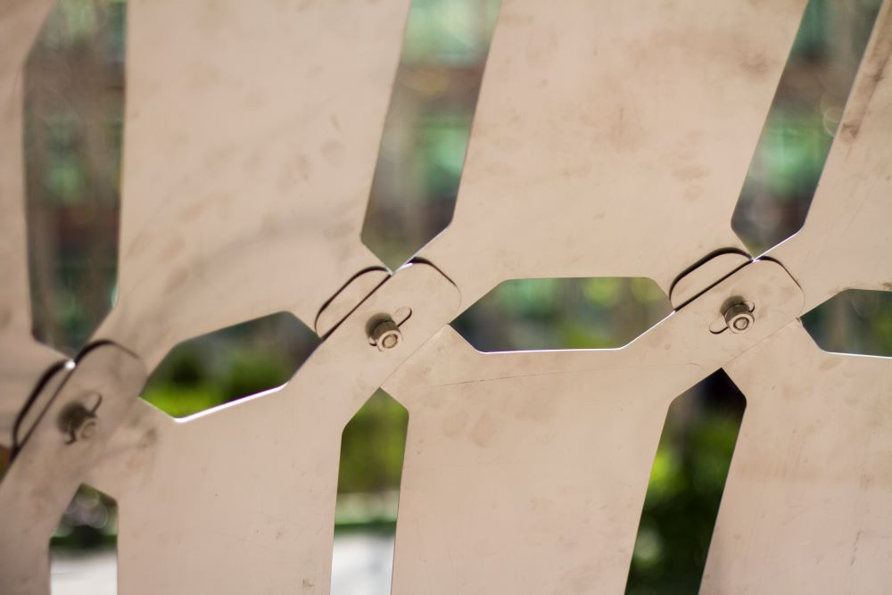
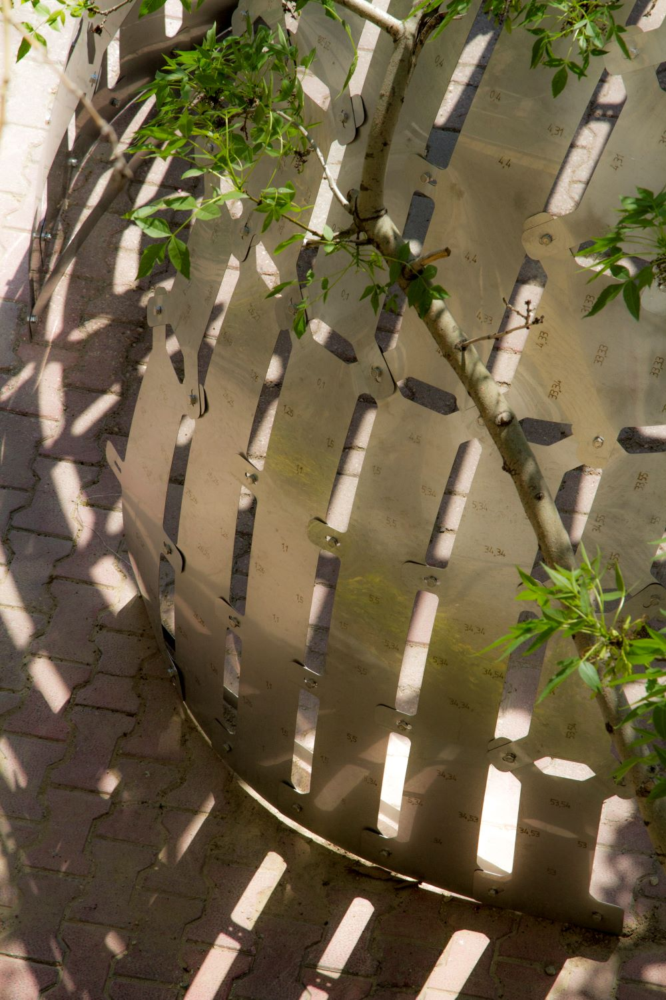
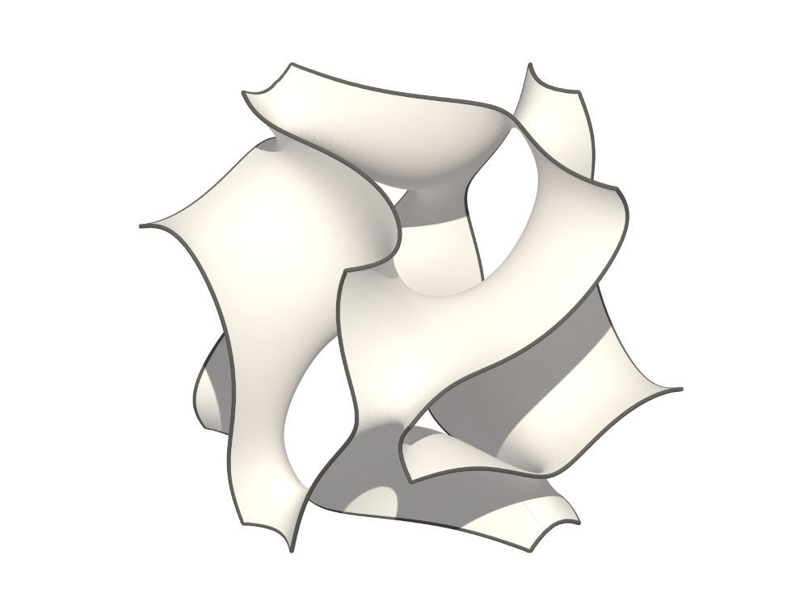
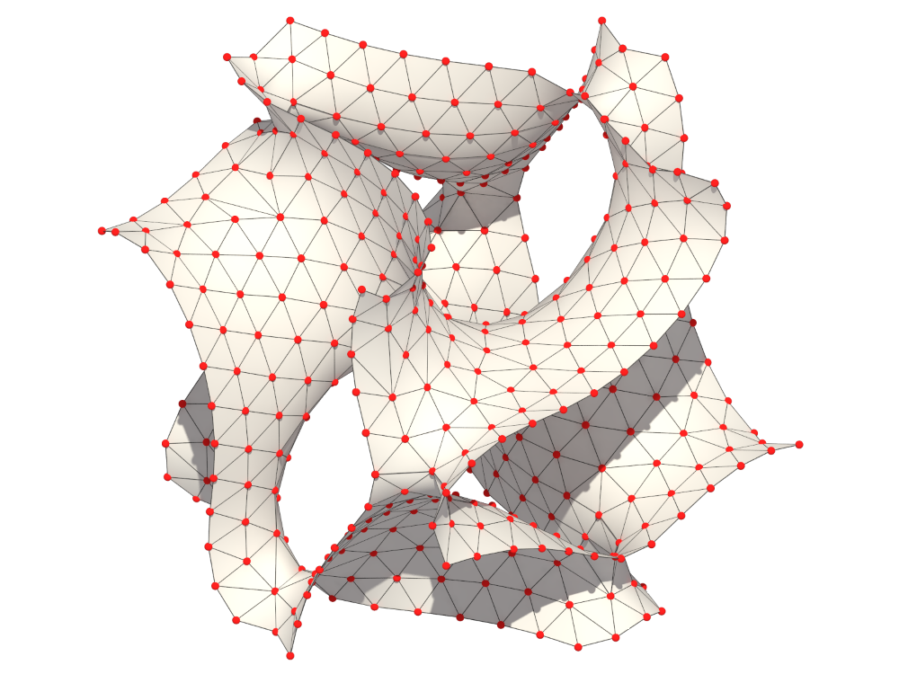
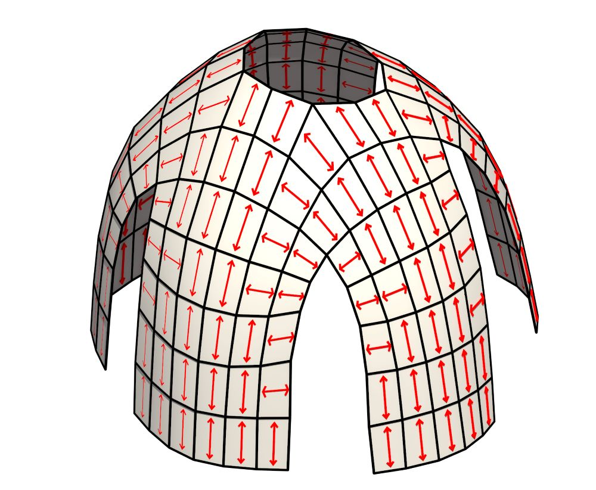

Project Overview
This research presents a method to approximate free-form geometries using developable strips, making complex surfaces fabricable with low-tech 2D tools like laser cutters and 3-axis CNC machines. By minimizing bending stress in each piece, the approach enhances structural efficiency, allowing for thinner and lighter constructions without requiring robotic folding or complex CNC machining.
- 
- 
Key Innovations :
Low-Tech Fabrication
The method divides free-form surfaces into single-curved, developable strips, enabling fabrication with widely accessible CNC machines without requiring expensive multi-axis machining.
Computational Geometry Approach
Two geometric algorithms (General and Local approaches) optimize strip formation, balancing flatness, bending stress, and the number of pieces for efficient construction.
Material Efficiency & Structural Strength
Minimizing bending stress in each strip reduces residual forces, leading to stiffer, lighter, and more efficient structures that require less material while improving structural performance.
Architectural & Aesthetic Benefits
The process generates a perceptual curvature map of the original surface, amplifying geometric aesthetics while maintaining design integrity.
- 
- 
-

Methodology :
Form-Finding & Optimization
The base free-form surface is converted into a triangular or quadrilateral mesh, ensuring that each strip remains developable (single-curved and easy to fabricate).
General Approach (Top-Down)
Uses a global guiding vector to define paths across the surface, ensuring uniform strip generation but lacking localized adaptability.
Local Approach (Bottom-Up)
COptimizes strip generation based on local curvature, reducing bending stress more effectively and improving the geometrical accuracy of curved regions.
Fabrication & Assembly
The final developable strips are nested, laser-cut, and assembled manually using simple screw and nut connections, eliminating the need for robotic folding.
- 